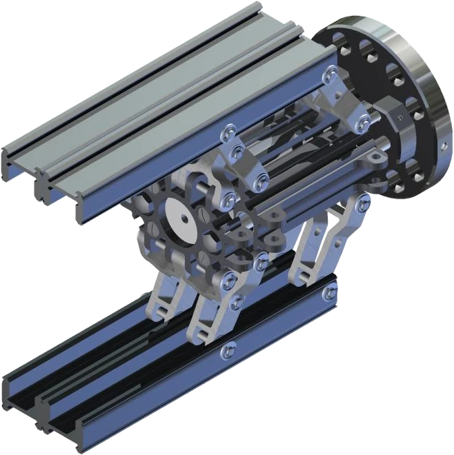
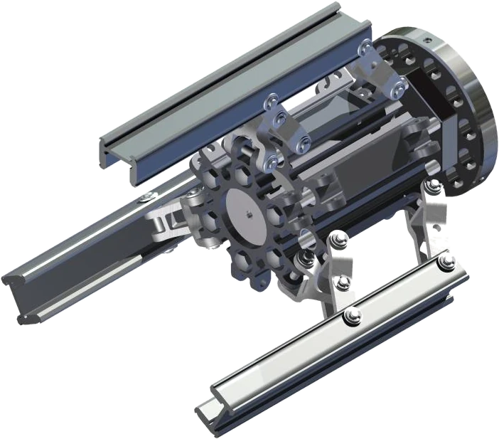
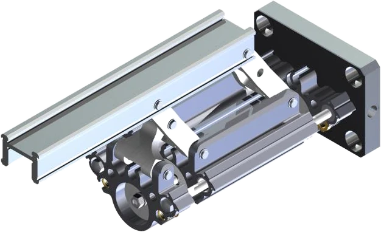
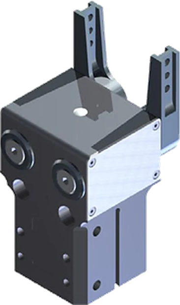
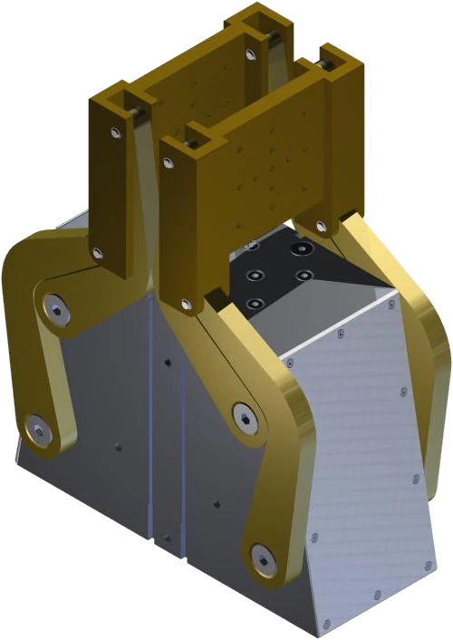
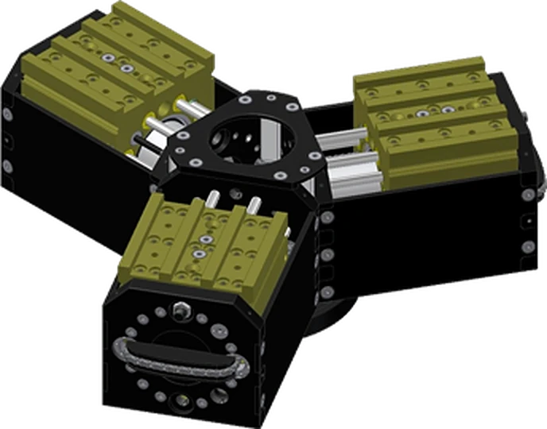
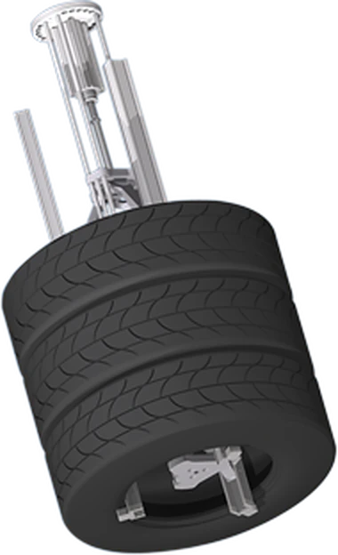
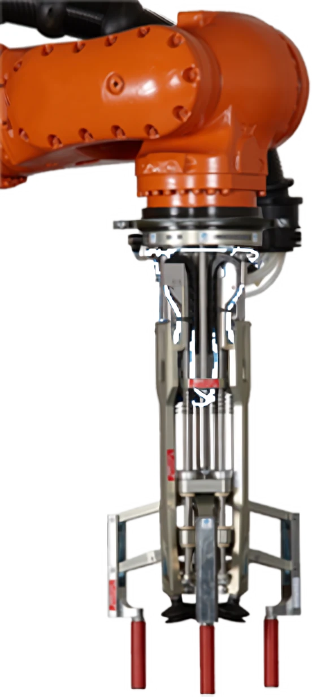

Modulare Greifersysteme direkt vom Erfinder.
GMG entwickelt, fertigt und vertreibt ausschließlich Greifer: technische Hände für Roboter, Maschinen und Anlagen. Form, Fingeranzahl, Bewegung und Fingerlänge wählen Sie frei.

3D-Platzhaltermodell (Test) – wird durch einen GMG-Greifer ersetzt
Ihr Teil, unser Greifer – direkt hier ausprobieren
Laden Sie Ihr Teil als STEP- oder STL-Datei oder wählen Sie eine Grundform. Dann den Greifer verfahren, absenken und zugreifen lassen. Die Datei bleibt auf Ihrem Rechner.
Teil laden
- Abmessungen
- –
- Gewicht
- –
Greifer
Hier erscheinen die Greifer, für die ein 3D-Modell vorliegt. Weitere GMG-Greifer folgen.
Greifen testen
Teil wird geladen …
Anfrage mit diesem TeilDer 3D-Konfigurator läuft nur auf der Webseite (online).
Der passende Greifer für Ihre Aufgabe
Neun Produktfamilien, vom kompakten Winkelgreifer bis zum Schwerlastgreifer mit bis zu 850 Nm pro Achse und Finger.

Hexagonale Bauform
2- bis 6-Finger-Greifer mit kreisförmiger Anordnung der Greiferfinger.
AnsehenRechteckige Bauform
2- bis 6-Finger-Greifer mit rechtwinkliger Anordnung der Greiferfinger.
Ansehen
Einzelfinger
Greifer- und Spannmodul E03 – Maschinenelement für Eigenkonstruktionen.
Ansehen
Winkelgreifer
Abgedichtete 180°-Winkelgreifer in extrem robuster Ausführung.
Ansehen
Parallel-Winkelgreifer
2- oder 3-Finger-Greifer mit maximaler Fingeröffnung und vier angetriebenen Armen pro Backe. Eine GMG-Erfindung.
Ansehen
Schwerlastgreifer
Modularer Greifertyp mit bis zu 850 Nm Belastbarkeit pro Achse und Finger.
Ansehen
Reifengreifer
Der meistnachgebaute Greifer. Direkt vom Erfinder.
Ansehen
Nadelgreifer
Abgedichtete Nadelgreifer für weiche oder unregelmäßige Teile.
Ansehen
Langarmgreifer
Schlanker 3-Finger-Greifer für den Griff in die Ecken von Kisten und Kartonagen.
AnsehenWas modular bei GMG bedeutet
Ein Baukasten, aus dem für jede Handhabungsaufgabe der passende Greifer entsteht. Wirtschaftlich anpassbar, wenn sich die Aufgabe ändert.
Geometrische Form
Hexagonal, rechteckig, quadratisch oder als Einzelmodul.
Anzahl der Finger
Zwei bis sechs Finger, frei positionierbar.
Bewegungsform
Parallel, schwenkend oder kombiniert, für jeden Finger einzeln.
Fingerlänge
Variabel, für jeden Finger einzeln wählbar.
Robust, wartungsfrei und patentiert
Exakte Linearbewegungen der Greiffinger, realisiert ausschließlich mit einfachen Drehgelenken. Ohne gehärtete und geschmierte Führungsnuten, die bei langen Fingern zum Klemmen neigen.
- Erfinder der modularen Greifersysteme, dazu der Parallel-Winkelgreifer und der Schwerlastgreifer. International patentiert und mehrfach ausgezeichnet.
- Wartungs- und schmierungsfreie Gleitlager, viele Baureihen wartungsfrei bis 10 Mio. Hübe.
- Aluminiumlegierungen und nichtrostender Stahl: abwaschbar, rostfrei, langlebig und 100 % wiederverwertbar.
- Kundenspezifische Greifer: Aus dem engen Kontakt mit Ihnen entstehen neue Lösungen.
Die Videos werden erst nach Klick von YouTube geladen.
Ihre Handhabungsaufgabe. Unsere Greiferlösung.
Rufen Sie uns an oder schicken Sie uns Ihre Anfrage, gern mit Zeichnung oder Skizze. Häufig entsteht daraus ein kundenspezifischer Greifer.
folgt
Name und Funktion folgen